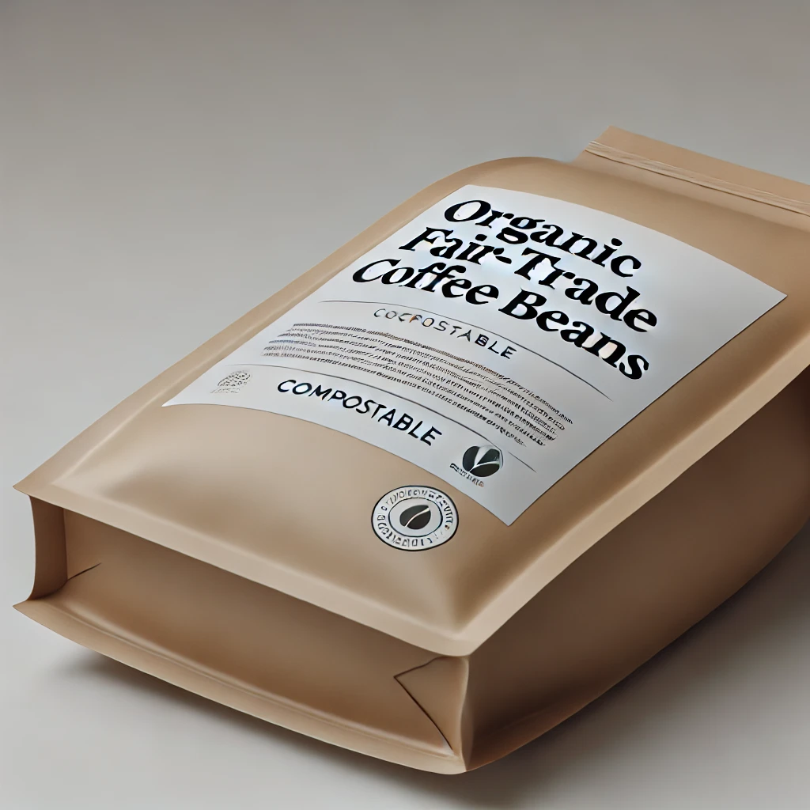
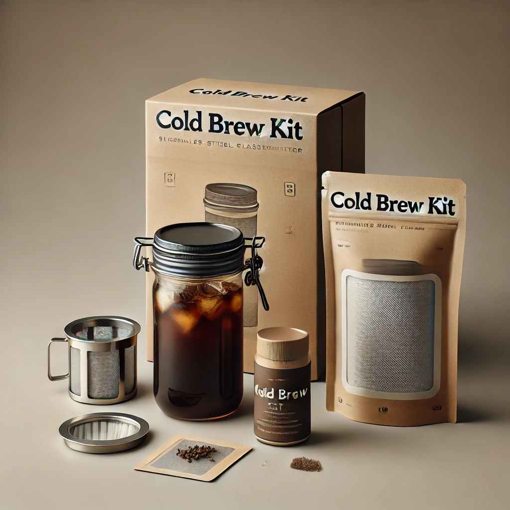

Organic Fair-Trade Coffee Beans
Sustainably sourced coffee beans from fair-trade farms. Available in light, medium, and dark roasts. Packaged in compostable bags.
Reusable Coffee Cups
Stylish, durable coffee cups made from bamboo or stainless steel. Available in multiple colors and sizes.

Cold Brew Kits
A home cold brew starter kit with a reusable glass jar, stainless steel filter, and eco-friendly packaging.
Compostable Coffee Pods
Biodegradable coffee pods in flavors like Vanilla Hazelnut, Mocha, and Espresso Roast. Compatible with most coffee machines.
Locally-Sourced Pastries
Freshly baked pastries made with organic, locally sourced ingredients. Includes vegan and gluten-free options.